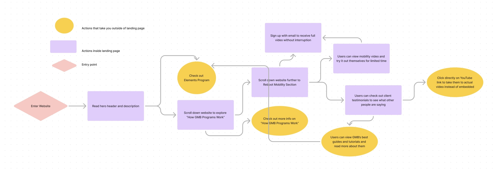

I knew I wanted to incorporate gradients into my redesign. One
company that utilizes gradients effectively is Stripe. After
exploring their website, I admired their clean UI and how they
seamlessly integrate gradients throughout their content. Rather than
using a gradient overlay on an image, as GMB is currently doing, I
decided it would be more visually appealing to apply the gradient
over text or as a background element, avoiding a cluttered look. I
also drew inspiration from Ramp’s video carousel layout, which I saw
as a great fit for GMB’s design. Overall, GMB Fitness’s landing page
lacked some aesthetic design elements, which I aimed to address in
my redesign. I also wanted to focus on GMB’s brand appeal and what
makes it different from other fitness programs.
- involved in cross-fit
- feeling some of injuries
- slowed down metabolism
- recovering cross-fitter
- involved in hiking/gardening
- struggling to fully squat
- have non-athletic responsibilities
- wants supplemental program
Through user research and personas, we identified that many of our
users are former athletes or active individuals who want to move
again but may feel held back by aches and pains. GMB is designed to
be that friendly, approachable guide to help them start moving
again, without the pressure or intensity of a complete fitness
overhaul. To clearly differentiate GMB from traditional fitness
programs, I strategically planned to place a dedicated section right
beneath the hero banner that explains how GMB programs work.
I planned to include a section that highlights what sets GMB apart,
allowing users to quickly grasp the value proposition. I planned to
replace the current thin headings with clear, descriptive ones that
guide users seamlessly through the content, making it easier for
them to quickly grasp what GMB offers. Additionally, I wanted
emphasized GMB’s global reach, showcasing the number of clients and
countries we’ve expanded to. This not only builds trust but also
reinforces GMB’s credibility by demonstrating that it’s a proven
product enjoyed by many across the world.

Users should be able to understand what GMB offers within the first
30 seconds of landing on the page. After grasping the core value,
they can explore client success stories, showcasing real people who
have benefited from GMB's programs, which helps build trust. From
there, users can either browse the ‘Best Tutorials and Guides’ or
visit the ‘Elements’ page for pricing and detailed information about
the programs.
An alternative flow allows users to learn more about GMB’s offerings
and what sets it apart, followed by testing the 20-Minute Reboot
video. After a set amount of time, the video prompts users to sign
up with their email to continue watching, encouraging email capture
while offering a preview of the program.
I aimed to build trust in our science-based approach by giving users
immediate value upfront. That’s why I included a snippet of our free
20-minute bodyweight reboot video directly on the page. Users can
watch the first five minutes to experience the quality of our
content firsthand before being prompted to input their email to
access the full video. This approach not only provides tangible
value but also encourages users to engage further by signing up,
creating a natural progression toward conversion. In the old design,
users would have to sign up with their email before they received
the free video, which could have deterred people from the start.
In my redesign, I focused on improving the presentation of our best
guides and tutorials. While the original design included these
resources, it lacked an inviting and visually appealing layout,
which made it harder for users to engage with the content.
In the new design, I prioritized creating a more welcoming and
visually stimulating experience. By utilizing simple icons, adding
clear headings, and incorporating inviting imagery and visuals, I
made the guides more accessible and engaging. This redesign allows
users to explore the tutorials more easily, ultimately creating
trust in the quality of our offerings and encouraging deeper
engagement.
The improved design helps users feel more comfortable and
interested, contributing to higher retention and interaction rates
with our content, and positioning them closer to making a purchase.
After performing some usability tests with my prototype, I had some
design feedback that included:
-
Adding some simple animations to make the page more engaging
-
Provide a more memorable graphic for “How GMB programs work”
- Being careful to include specific metrics
-
Color code the icons for the “best guides & tutorials”. For
example, make the background of “mobility” content pink
-
Change some of the wording of the content to be more professional
Based on the feedback, I made some adjustments to the prototype and
presented it to the tech lead for approval. He approved the design,
so I will now move forward with the development. Instead of
migrating everything to the new design all at once, which would be a
significant brand shift, I plan to implement the improvements
gradually, updating the website component by component. I will use
PHP, HTML, SCSS, and JavaScript to implement these designs.
 Mobile navigation
Mobile navigation